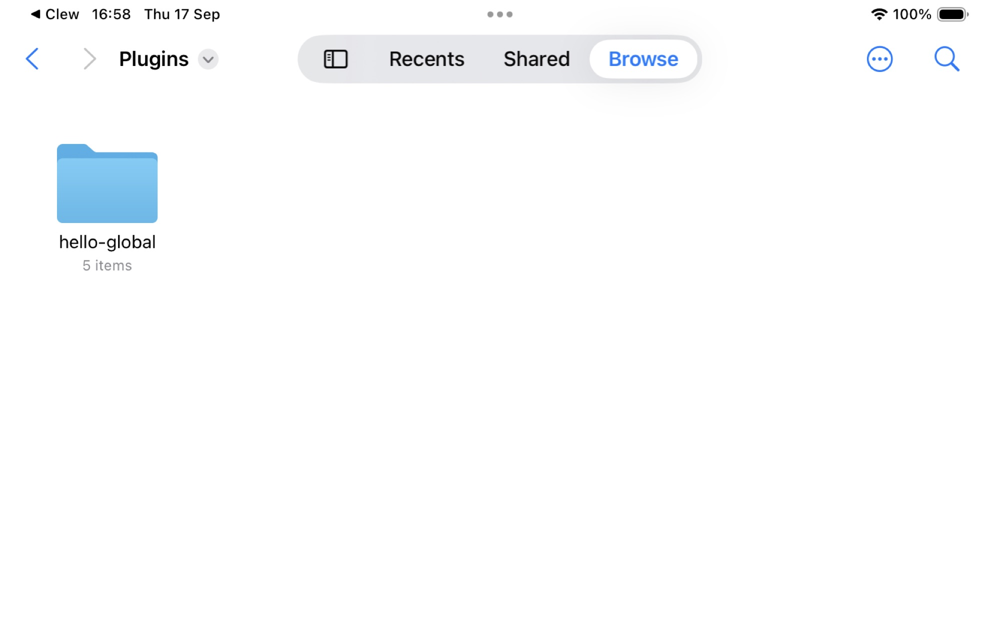
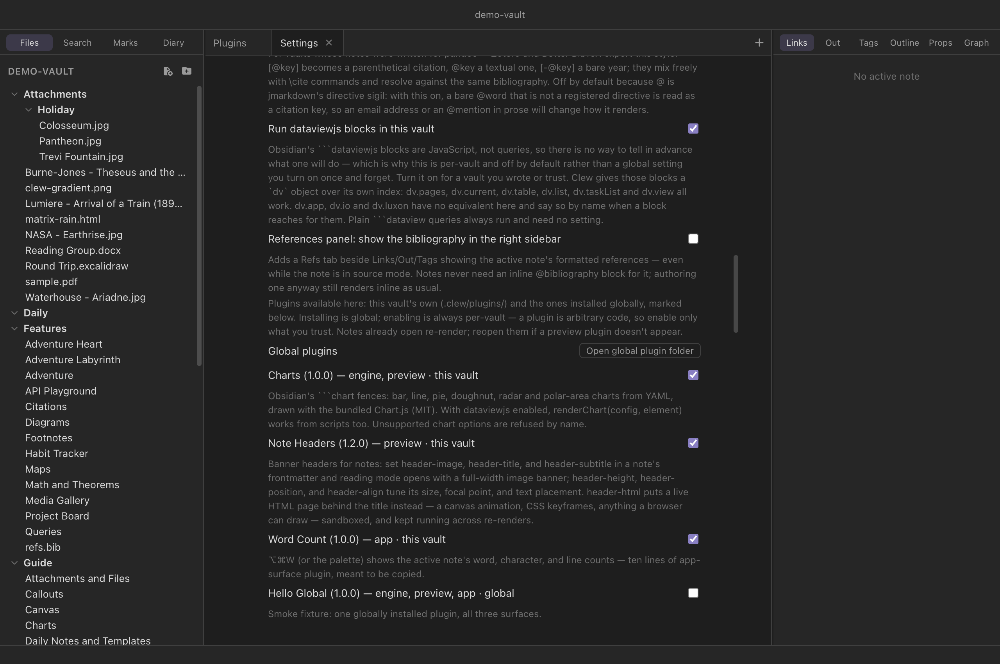

Extending Clew
Vault plugins
Clew's plugins do not live in an app-wide plugin directory, and there
is no marketplace. A plugin is a folder inside the vault —
.clew/plugins/<id>/ — so it travels with the vault:
share the folder and you have shared the behaviour, clone the vault and
the plugin comes along. One manifest file declares up to three
surfaces, one for each seam Clew already extends itself
through: new syntax in the engine, decoration in the rendered preview,
and commands in the app. Every plugin is off until you switch it on,
per vault.
Plugins travel with the vault
The design follows from Clew's plain-text commitments. A vault is a folder that carries everything about itself — notes, attachments, settings — so it should carry its behaviour too. A research group sharing a vault can keep the group's custom fence syntax, note decorations, and palette commands in the vault itself; a vault synced between machines behaves identically on both. There is nothing to install, because copying the vault was the installation.
The counterweight is trust. A plugin is arbitrary code, so discovering
a plugin in a vault never runs it: every plugin must be explicitly
enabled in Settings → This vault, which
lists each plugin found in .clew/plugins/ with its name,
version, surfaces, and description, and a checkbox per plugin. The
enabled set is stored in the vault's
.clew/vault-settings.json as a "plugins"
array of ids. Enabling a plugin is a statement of trust in the vault —
the same posture as the Note API toggle
that sits beside it.
Installing a plugin once, for every vault
A plugin that travels with its vault is right for a plugin about
that vault. It is the wrong shape for the plugin you wrote and want
everywhere: copying the folder into each new vault, and re-copying it
after every fix, is a tax on making vaults. So Clew looks for plugins in
two places — the vault's own .clew/plugins/, and a
global folder belonging to you rather than to any
vault:
| Platform | Global plugin folder |
|---|---|
| macOS | ~/Library/Application Support/Clew/plugins/ |
| Windows | %APPDATA%\Clew\plugins\ |
| Linux | ~/.config/Clew/plugins/ |
| iPad | Clew › Plugins in the Files app — beside the demo vault, under On My iPad |
A plugin folder there has exactly the same shape as a vault plugin —
manifest.json plus its surfaces — and behaves identically
once running. Settings → This vault has an
Open global plugin folder button that creates the folder and
opens it, so there is nothing to look up.

The split to keep in mind is installing versus
enabling. Installing globally is done once and offers the
plugin in every vault. Enabling is still per-vault, in the same
checkbox list and the same "plugins" array as before — so a
global plugin runs in the vaults you switch it on for, and nowhere else.
The trust boundary has not moved: opening a vault still runs no plugin
code you did not enable there.
Both scopes appear in one list, each row marked this vault or global. If a vault contains a plugin with the same id as a global one, the vault's copy wins and the global one is hidden — one id is one plugin, and the more specific copy is the one you meant, which is how a vault pins its own version of a plugin you also use elsewhere.

Anatomy of a plugin
A plugin is a folder whose name is its id, containing a
manifest.json and one file per declared surface:
Layout
.clew/plugins/word-count/
├── manifest.json
├── engine.js (optional)
├── preview.js (optional)
└── app.js (optional)manifest.json
{
"id": "word-count",
"name": "Word Count",
"version": "1.0.0",
"description": "What it does, for the settings screen.",
"apiVersion": 1,
"surfaces": {
"engine": { "file": "engine.js", "extensions": "myFence" },
"preview": "preview.js",
"app": "app.js"
}
}
The rules, all enforced at discovery time: the folder name must equal
id, and ids are lowercase letters, digits, and hyphens (64
characters at most). A surface may be declared as a bare filename or as
an object with a file key; either way the file must sit
directly in the plugin's folder — no subdirectories, no path tricks —
and a declared file that does not exist is dropped. A plugin whose
apiVersion is newer than the running app understands
(currently 2) is skipped entirely rather than half-loaded. A
folder with a broken or missing manifest is not a plugin.
The three surfaces
engine — extend the language
The engine surface is a jmarkdown extension module loaded into the
render worker — the same mechanism Clew itself uses to add
[[wikilinks]] and the ```leaflet fence to the
engine. It is the surface for syntax: new fences, inline
directives, block transforms. The module exports marked-style extension
objects, and the manifest's extensions key names the
exports to register (comma-separated). When the plugin is enabled, Clew
adds the module to the engine configuration it generates for the
vault, and every render — reading mode and
website export alike — picks it up.
Because the worker is a separate process, a broken extension fails a
render, not the app.
engine.js — a block extension
export const myFence = {
name: 'myFence', level: 'block',
start(src) { return src.match(/^```my/m)?.index; },
tokenizer(src) { /* … */ },
renderer(token) { return '<div class="my">…</div>'; },
};preview — decorate the rendered note
The preview surface is a plain script injected into every rendered-note
document, after Clew's own preview client. It works on the rendered
DOM: restyle it, annotate it, add widgets. Because reading mode patches
the document in place rather than reloading it, a preview script does
its work once on load and re-applies it on the clew:render
event, which fires after every live update. If the vault's
Note API gate is also on, preview scripts
can use window.clew like any note script.
app — add commands to Clew itself
The app surface runs in the app, against a small, versioned API — a
deliberate contract, not a door into Clew's internals. The script
receives a single binding named clew (this is the plugin
API — unrelated to the Note API object of the same name inside rendered
notes) with exactly these capabilities: register palette and hotkey
commands, read and write vault files, list the vault, open notes, read
the active tab's path, subscribe to vault and workspace events, and
show notices. The reference lists every
method. Registered commands appear in the command palette and the
hotkey editor automatically,
namespaced as plugin:<plugin-id>:<command-id>.
Lifecycle is strict and automatic: everything an app-surface plugin registers — commands, event subscriptions — is tracked and unwound when the vault closes, when a different vault opens in the window, or when the plugin is disabled. A plugin cannot outlive its vault.
unsafe-eval), so app-surface code is not
read-and-evaluated: it loads as a real script from an internal
protocol namespace that serves only currently enabled
plugins. You will see this as a one-line curiosity in devtools;
otherwise it changes nothing about how you write the file.
The demo vault's own plugins, read closely
The demo vault ships three plugins, and all of them are meant to be copied: a preview surface (Note Headers), an app surface (Word Count), and an engine + preview pair (Charts) — one worked example per way of extending Clew.
Note Headers — a preview surface
The banner across the top of the demo vault's Welcome note — visible in the screenshot in the introduction — is not a feature of Clew. It is rendered by the vault's Note Headers plugin: a manifest and one preview script, about ninety lines with comments. Its manifest declares a single surface:
.clew/plugins/header/manifest.json
{
"id": "header",
"name": "Note Headers",
"version": "1.2.0",
"description": "Banner headers for notes: set header-image, header-title, and header-subtitle in a note's frontmatter and reading mode opens with a full-width image banner; header-height, header-position, and header-align tune its size, focal point, and text placement. header-html puts a live HTML page behind the title instead — a canvas animation, CSS keyframes, anything a browser can draw — sandboxed, and kept running across re-renders.",
"apiVersion": 1,
"surfaces": {
"preview": "preview.js"
}
}
The contract it implements is frontmatter-driven — any note in the
vault can opt into a banner, and tune it — header-height
sets the banner's height in pixels (170 if unsaid),
header-position chooses which part of the image shows (any
CSS background-position), and header-align places the text
block at the top, center, or (the default)
bottom:
In any note's frontmatter
---
header-image: "[[banner.jpg]]"
header-title: A Grand Title
header-subtitle: with a subtitle
header-height: 240
header-position: center 30%
header-align: bottom
---
header-image takes a wikilink or a plain vault path — both
work, and a bare name is looked for in Attachments/. Be
aware that the wikilink form is a convention here rather than a
tracked link: Clew's indexer deliberately skips frontmatter when
scanning for links, so an image referenced this way does not appear in
the graph or in backlinks, and renaming it will not rewrite the
reference. The banner simply stops loading. Nothing goes wrong with the
note; it just goes blank at the top.
A living background
header-html replaces the image with an ordinary
.html file from the vault, loaded into an iframe that fills
the banner behind the title. Anything a browser can draw will do — a
<canvas> animation, CSS keyframes, an SVG, a gradient
that drifts. Write it as a standalone page sized to 100% width and
height; the banner is its viewport. If both keys are present,
header-html wins.
In any note's frontmatter
---
header-html: "[[matrix-rain.html]]"
header-title: The Matrix
header-subtitle: an animated HTML background
header-height: 220
---
The page runs sandboxed, with
allow-scripts and nothing else, so it gets its own opaque
origin: it can animate, but it cannot read the note, reach the vault,
touch the surrounding document, or use the
note API. A decoration should not have the
run of the place. It is also pointer-events: none, so it
never swallows a click or a scroll meant for the note.
The interesting part is what happens on the next render. A
preview re-renders whenever the note is saved, and the morphdom pass
that patches the document would ordinarily discard a banner the incoming
HTML knows nothing about — restarting the animation every few seconds as
you type. Two things prevent that: the banner carries
data-clew-keep, which tells the preview client to leave it
alone, and the plugin compares the frontmatter it just read against what
the existing banner was built from, reusing it untouched when nothing
has changed. The animation runs continuously, as though the note were
never re-rendered at all.
The script is a working tour of preview-surface technique. It works out
which note it is running in from the document's own URL, fetches the
raw note text over the preview protocol, and parses the
header-* keys out of the frontmatter:
.clew/plugins/header/preview.js (excerpts)
// /<sid>/<note path>.html → the raw note is the same URL minus ".html".
const notePath = decodeURIComponent(location.pathname).replace(/\.html$/i, '');
const apply = async () => {
const text = await (await fetch(notePath)).text();
const spec = parseHeader(text);
document.querySelector('.clew-note-header')?.remove();
if (!spec) return;
header = document.createElement('div');
header.className = 'clew-note-header';
// … builds the banner: background image or gradient plate,
// title and subtitle with a scrim, then …
document.body.prepend(header);
// Titles may carry $math$ — MathJax is already in the document.
window.MathJax?.typesetPromise?.([header]).catch(() => {});
};
document.addEventListener('clew:render', apply);
apply();
Three habits here are the ones to copy. First, the last two lines:
run once on load, and re-run on every clew:render — that
pair makes the plugin immune to live updates. Second,
apply() is idempotent: it either removes its previous
output before building again or, when the frontmatter it read is
unchanged, leaves the existing banner exactly where it is. Re-running it
any number of times converges on the same document — and, for the HTML
background above, that second branch is what keeps an animation alive.
Third, it composes with what is already in the document: MathJax is
there, so a banner title may carry mathematics. The rest of the script
is ordinary DOM construction with inline styles.
Word Count — an app surface
The second plugin is the smallest useful app-surface plugin, and its own first line says "copy me". This is the entire code file:
.clew/plugins/word-count/app.js
// Word Count — the smallest useful app-surface plugin; copy me.
clew.commands.register({
id: 'count',
name: 'Word count of the active note',
hotkeys: ['Mod-Alt-w'],
run: async () => {
const path = clew.workspace.activePath();
if (!path) { clew.ui.notice('No active note'); return; }
const text = await clew.vault.read(path);
const words = (text.match(/\S+/g) ?? []).length;
const lines = text.split('\n').length;
clew.ui.notice(`${words.toLocaleString()} words · ${text.length.toLocaleString()} characters · ${lines.toLocaleString()} lines`);
},
});With the plugin enabled, the command appears in the palette as any other command does, ⌘⌥W triggers it, and the hotkey can be rebound in the hotkey editor — the command system does not distinguish plugin commands from built-in ones.
Charts — an engine + preview pair
The third plugin adds syntax: the ```chart fence
of Obsidian's Charts plugin, reimplemented for Clew from its documented
YAML format and drawn with a bundled copy of the MIT-licensed
Chart.js. The demo vault's own
Charts guide note holds a live example of every form; the
shortest is this:
In any note
```chart
type: bar
labels: [Monday, Tuesday, Wednesday]
series:
- title: Grades
data: [83, 95, 62]
```
type is one of bar, line,
pie, doughnut, radar or
polarArea, and the documented modifiers —
width, stacked, indexAxis,
tension, fill, bestFit,
beginAtZero, axis titles and bounds,
legendPosition, transparency,
labelColors — do what they do in Obsidian. What the plugin
does not support it refuses by name rather than
half-drawing: a chart that silently dropped its stacked:
would be a wrong chart, which is worse than no chart. (The one
documented modifier refused outright is time: — date axes
need a date adapter the plugin does not ship.)
As a plugin to read, Charts is the worked example of a fence that needs
a browser to finish the job, and of the two surfaces
cooperating through the document. The engine surface does all the
thinking in the render worker — parses the YAML, maps the modifiers,
refuses what it must — and emits only a placeholder
<div> carrying the finished Chart.js configuration
as JSON. The preview surface does all the drawing: it loads Chart.js
from the plugin's own folder on demand (a note without charts never
pays for it), instantiates a canvas per placeholder, and colors labels
and grid lines from the document's computed styles so charts follow the
app theme. The same two habits as the banner keep charts alive across
live re-renders: the canvas carries data-clew-keep, and
the script compares each placeholder's configuration against what it
already drew — an unchanged chart is left exactly where it is, so
editing the prose around one does not restart its animation.
With Run dataviewjs blocks also enabled, the plugin supplies
Obsidian's renderChart(config, element) to
```dataviewjs scripts — a raw Chart.js configuration in, a
chart in the output; see
the queries chapter.
Writing your first plugin, step by step
- In your vault, create the folder
.clew/plugins/hello/. - Add a
manifest.json:{ "id": "hello", "name": "Hello", "version": "0.1.0", "apiVersion": 1, "surfaces": { "app": "app.js" } }. Theidmust match the folder name. - Add an
app.js— start by copying Word Count above and changing therunfunction. - Open Settings → This vault; your plugin is listed with its surfaces. Tick its checkbox.
- Close and reopen the vault (or View → Reload) — app
surfaces load when a vault opens, so ticking the checkbox alone does
not load one. Then open the command palette and run your command.
Iterate on
app.jsthe same way: edit, reload, run.
For a preview surface, the loop is the same with
"preview": "preview.js" in the manifest; note that
toggling a plugin re-renders open previews, but if a preview surface
does not appear, close and reopen the note's tab. For an engine
surface, declare "engine": { "file": "engine.js", "extensions":
"myFence" } and export the named extension objects; the engine's
own documentation covers the extension format.
Vault scripts — the lighter mechanism
Often you do not need a plugin at all. If all you want is shared
JavaScript available in every rendered note — a custom element, a few
helper functions — drop .js files into
.clew/scripts/. Every rendered note loads them, in
alphabetical order, with no manifest and no enable step beyond the
vault's existing trust surface (they are the moral equivalent of the
inline scripts notes can already carry). They are the JavaScript twin
of the .clew/snippets/ CSS convention described in
Theming and CSS snippets, and — unlike
plugin surfaces — they ship with the vault on
website export and run on the published
pages.
Custom elements are the natural fit: define
<my-timeline> once in a vault script, use the tag in
any note. Clew's live updates respect custom elements — a re-render
keeps your element in place and syncs its attributes (firing
attributeChangedCallback) rather than wiping its DOM. A
single note can also pull in one script for itself via jmarkdown's own
metadata header (Script: ./my-element.js).
Plugins or the Note API?
The Note API is the in-note
story: one note that behaves like an application, its logic living in
the note itself. Plugins are the vault-wide story: behaviour
that applies to every note (preview, engine) or to the app around them
(app surface). Reach for a note script when the behaviour is
the note's content — a tracker, a dashboard, a game. Reach for a
plugin when the behaviour should apply everywhere — new syntax, a
banner convention, a command. They compose: a preview-surface script
may use window.clew, and a scripted note works in a vault
full of plugins.
Reference
Where plugins live
| Scope | Folder | Notes |
|---|---|---|
| This vault | <vault>/.clew/plugins/<id>/ |
Travels with the vault; wins over a global plugin of the same id. |
| Global | <app data>/Clew/plugins/<id>/ (on iPad,
Clew › Plugins in the Files app) —
Settings has an Open global plugin folder button |
Installed once, offered in every vault; does not travel when you share a vault. |
Either way, enabling is per-vault:
"plugins" in
<vault>/.clew/vault-settings.json. | ||
Manifest fields
| Field | Required | Meaning |
|---|---|---|
id | yes | Must equal the folder name; lowercase letters, digits, hyphens; at most 64 characters. |
name | no | Display name for the settings screen (defaults to the id). |
version | no | Shown in settings (defaults to 0.0.0). |
description | no | One or two sentences for the settings screen. |
apiVersion | no | Plugin API version the plugin targets (defaults to 1). Plugins targeting a newer version than the app supports are skipped. |
surfaces | yes | Any of engine, preview,
app — each a filename in the plugin folder, or an
object with file. The engine surface's object form
takes extensions: a comma-separated list of the
module's exports to register. |
The three surfaces
| Surface | Runs | Good for | Key facts |
|---|---|---|---|
| engine | In the render worker (separate process, Node available) | New syntax: fences, directives, transforms | Exports named in extensions are added to the
vault's engine configuration; applies to previews and website
export. |
| preview | In every rendered-note document, after the preview client | Decorating rendered output; widgets | Re-apply on clew:render; may use the Note API if
that gate is on; ships with website export (the plugin folder is
copied under assets/plugins/). |
| app | In the app, against the versioned plugin API | Commands, small workflow automations | Receives the clew binding below; everything
registered unwinds on vault change or disable. |
The app-surface API (clew, version 2)
| Member | Behaviour |
|---|---|
clew.apiVersion |
The API version, currently 2. Version 2 added
clew.toolbar; a version-1 plugin runs unchanged. |
clew.pluginId |
Your plugin's id. |
clew.vaultName |
The open vault's name. |
clew.commands.register(command) |
Registers a palette/hotkey command
({ id, name, hotkeys?, run }). The id is namespaced to
plugin:<plugin-id>:<id>; returns the full
id. Unregistered automatically on cleanup. |
clew.vault.read(path) |
Resolves to a vault file's text. |
clew.vault.write(path, content) |
Writes a vault file. |
clew.vault.list() |
Every file path in the vault's tree. |
clew.workspace.open(path, opts?) |
Opens a note in the workspace. |
clew.workspace.activePath() |
The active tab's path, or null. |
clew.events.on(name, fn) |
Subscribes to 'vault-changed',
'tree-changed', 'index-changed',
'active-changed', or 'layout-changed';
returns an unsubscribe function and is cleaned up
automatically. |
clew.ui.notice(text, ms?) |
A transient toast, three seconds by default. |
clew.toolbar.addButton(spec) |
A button on the editor
toolbar (version 2): { command, label, icon, group? }
— command a command id (usually one registered with
clew.commands.register), icon an
<svg> string, group a toolbar group
(insert by default). Returns a remover; removed
automatically on cleanup. |
See also
- The Note API — scripting a single note instead of the whole vault.
- Theming and CSS snippets — the CSS counterpart to vault scripts.
- Publishing as a website — vault scripts ship with the site; preview-surface plugins do not.
- How rendering works — the render worker that engine surfaces load into.
- Settings and hotkeys — where plugin commands and their hotkeys appear.